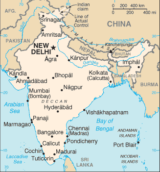

[Voir le carnet de route de l’Inde]
Itinéraire prévisionnel :
 Delhi
Delhi
 Agra : Taj Mahal
Agra : Taj Mahal
 Rajasthan : Jaipur, Jaisalmer, Jodhpur, Udaipur
Rajasthan : Jaipur, Jaisalmer, Jodhpur, Udaipur
 Gujarat : Modhera, Gandhinagar, Ahmedabad, Junagadh, Diu, Palitana
Gujarat : Modhera, Gandhinagar, Ahmedabad, Junagadh, Diu, Palitana
 Mumbaï
Mumbaï

Superficie : 3 287 000 km² (presque six fois la France)
Population : 1 025 096 000 habitants
Capitale : New Delhi
Peuples et ethnies : 72% d’Indo-Aryens, 25% de Dravidiens, 3% de Mongoloïdes
Langues : hindi et anglais, plus 16 autres langues et 1 600 langues mineures et dialectes
Religions : 82% d’hindouistes, 11% de musulmans, 2% de chrétiens, 2% de sikhs, 0,7% de bouddhistes et 0,7% de jaïns
Institutions politiques : Démocratie
Principales activités : agriculture (riz, blé, thé, caoutchouc), textile, charbon, acier, informatique et nouvelles technologies.
Visa : avant de partir absolument, 50 euros à Paris
Monnaie : la Roupie indienne (1 € = 57 Roupie en 2004)
Budget quotidien : 10 à 20 US $/jour
- Consulat :
22 rue Albéric Maignard, 75016 Paris.
Tél. : 01 40 50 71 71. Ouvert de 9h30 à 11h00 (dépôt de demande de visa) et de 16h00 à 17h00 (retrait).
http://www.amb-inde.fr - Office de Tourisme :
13 bd Haussmann, 75009 Paris.
Tél. : 01 45 23 30 45.
http://www.india-tourism.fr - Librairie de l’Inde :
20 rue Descartes, 75005 Paris.
Ambassade de France :
| Adresse | 2/50E Shantipath Chanakayapuri |
| Ville | New Delhi 110021 |
| Téléphone | (91 11 2)6118790 |
| Fax | (91 11 2)6872305 |
| URL | http://www.france-in-india.org |
Liste des médecins :
- Dentiste :
Ville : New Delhi
Nom : Max Healthcare
Adresse : 15 A Ring Road, Lajpat Nagar IV
Téléphone : 011 623 7200
Langues :
Commentaire : -
- Généraliste :
Ville : New Delhi
Nom : Max Healthcare
Adresse : 15 A Ring Road, Lajpat Nagar IV
Téléphone : 011 623 7200
Langues :
Commentaire : D’après nos infos, l’hygiène et les soins y sont très bons.
- Hôpital :
Ville : Jaisalmer
Nom : Sri Jawahir- Govt Hospital
Adresse : -
Téléphone : 52343/53335
Langues : Anglais
Commentaire : Demandez le docteur Dubey La qualité des soins y est acceptable
Ville : Jodhpur
Nom : Goyal hospital and research center
Adresse : 961/3 residency Road
Téléphone : 0291-432144/434144
Langues :
Commentaire : La qualité des soins est bonne... Demandez toutefois le Dr Anand Goyal
Ville : New Delhi
Nom : Apollo Hospital
Adresse : 21 Green’s Lane
Téléphone : 692 5858,5801
Langues : Anglais
Commentaire : C’est correct
Ville : New Delhi
Nom : Privat Hospital
Adresse : DLF Qatab Enclave, Phase II Gurgaon Haryana
Téléphone : 124 635 2097/635 116
Langues :
Commentaire : Très bonne qualité des soins